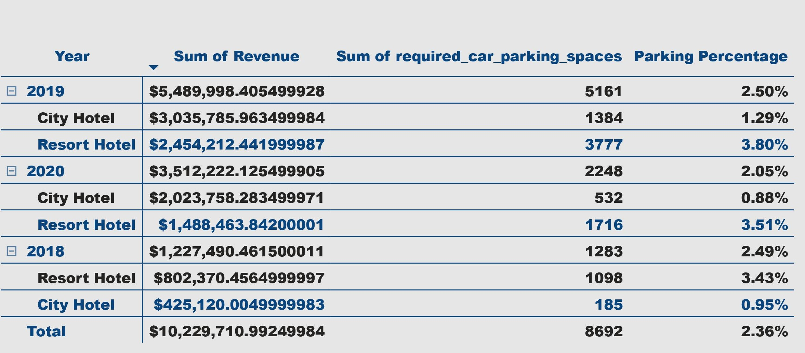

Data Scientist and Analyst skilled in SQL, Python, R, Hypothesis Testing, A/B tests, Parametric and non-Parametric tests, Tableau, Matplotlib, Plotly, Bokeh, Seaborn, Machine Learning in scikit-learn, Tensorflow, Keras, Pytorch, AWS, Hadoop, Spark, Hive, Docker.
Blogs
.
Projects
Empowering Prosumers:
Predictive Analytics for Energy Consumption and Production Optimization
The goal is to create an energy prediction model of prosumers to reduce energy imbalance costs. This project aims to tackle the issue of energy imbalance, a situation where the energy expected to be used doesn't line up with the actual energy used or produced. Prosumers, who both consume and generate energy, contribute a large part of the energy imbalance. Despite being only a small part of all consumers, their unpredictable energy use causes logistical and financial problems for the energy companies.
Analyzing Global CO2 Emissions and Country Features
This project aims to explore the relationship between various country features and CO2 emissions on a global scale. The dataset used includes information on sustainable energy, CO2 emissions, land area, electricity generation from fossil fuels, and international financial flows for clean energy. The analysis is conducted using Python, with Pandas for data manipulation and Plotly Express for visualizations.
Natural language processing for Hotel Review Analysis
This project aims to analyze hotel reviews dataset to predict reviewer scores based on various factors such as reviewer nationality, review content, and hotel characteristics. The dataset contains information like average score, reviewer nationality, review word counts, nights stayed, etc. Additionally, the project involves Exploratory Data Analysis (EDA) to understand the distribution of data and identify patterns, followed by model development using Logistic Regression and Decision Tree algorithms.

Hotel Revenue and Guest Trends Analysis
This project aims to analyze hotel revenue trends over the years, explore the necessity of increasing parking lot sizes, and identify notable data trends using Power BI and SQL.
Shopping Customer Segmentation
This project focuses on customer segmentation for a shopping mall using unsupervised machine learning techniques, specifically K-means clustering. The analysis begins with exploratory data analysis (EDA) of customer attributes such as age, annual income, and spending score. The project then applies K-means clustering in three stages: univariate clustering on annual income, bivariate clustering on income and spending score, and multivariate clustering incorporating age and gender as well. Through visualization and statistical analysis of the resulting clusters, the project identifies key customer segments, including a high-value target group (cluster 1) with high income and high spending scores, comprising 60% women. The insights derived from this segmentation can guide marketing strategies, helping the mall's marketing team to plan targeted campaigns and potentially capitalize on opportunities like special sales events for specific customer groups.